All of Us Strangers & Tragedy Porn
A review of Andrew Haigh's All of Us Strangers and looking at why contemporary queer cinema and film making still centers tragedy and loss as driving force behind gay stories, even when done beautifully.
Read More30 Years of Queerness or On appreciating Interview with a Vampire
Revisiting Interview with a Vampire, and how a heterosexual man made one of the most sensitive and interesting queer stories in cinema, thirty years on.
Read More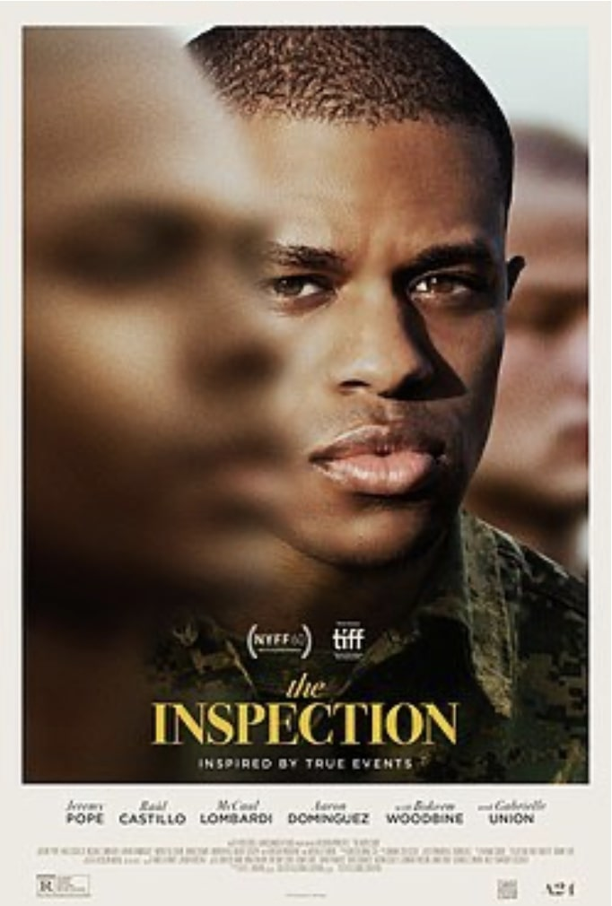
A24 & the Spectacle of the oppressed black body
A24 queer films have been hailed as breakthrough in queer black cinema but they also have can be seen denying black bodies notions of pleasure and joy in favor of depicting "oppression" and "struggle".
Read More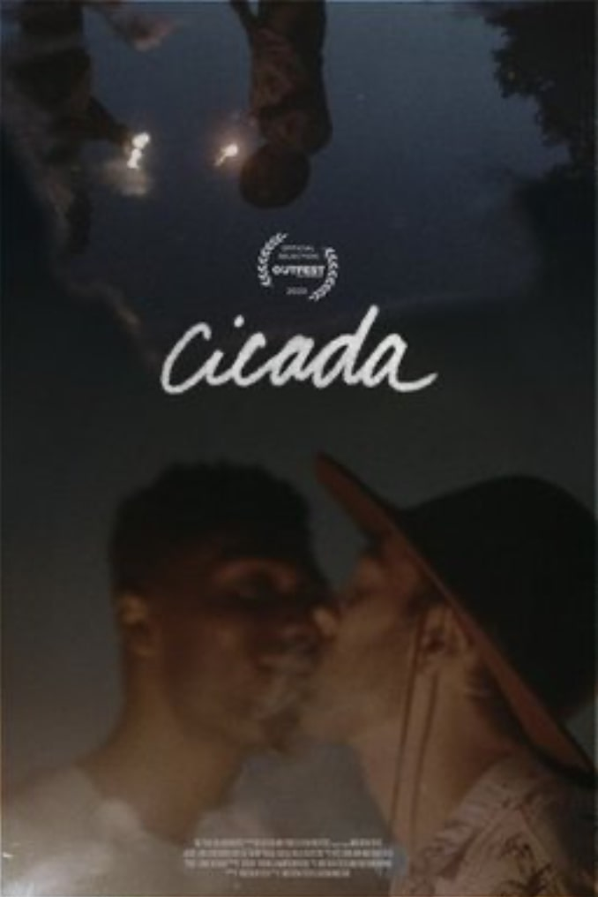
Cicadas or the sound of freudian inversion
An exploration of sound, psychoanalysis, and queer identity through cinema.
Read MoreGreat Freedom, great misery
A critical examination of Sebastian Meise's film about post-war Germany and queer persecution.
Read More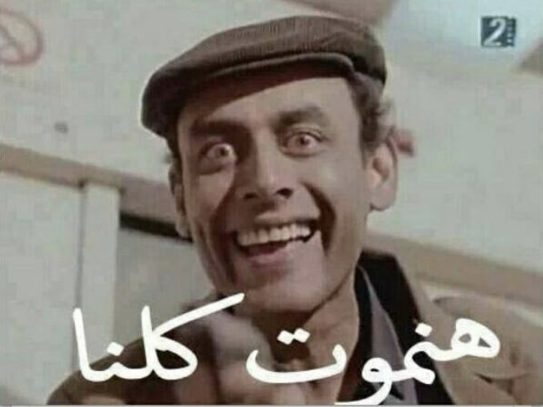
Death in Egypt
Reflections on death and suicide in Egypt. Part of the conversations on how to talk about death, that were developed during the course, "How do we talk about death", at the Cairo Institute for Liberal Arts and Sciences.
Read More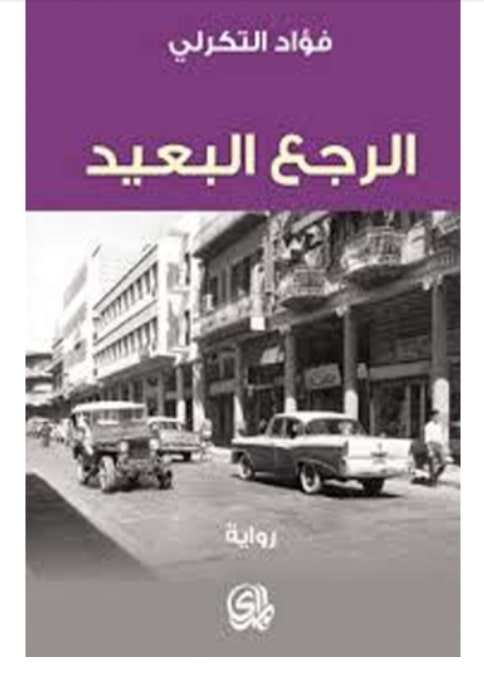
The Long Way Back: An Epic of Tragic Insights
A review of Fouad al-Tikerli's The Long Way Back (1980)
Read More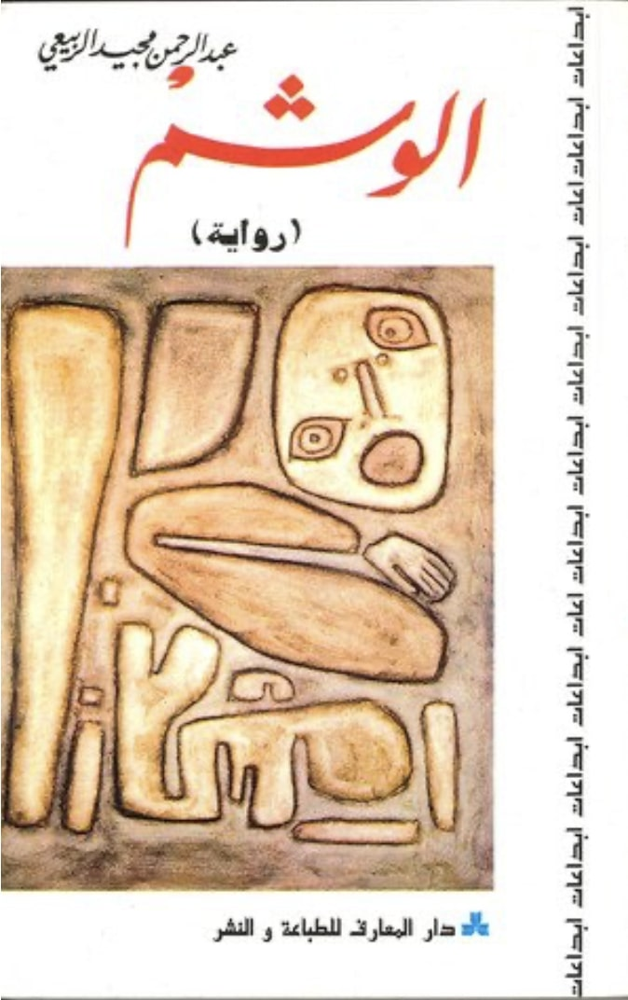
al-Rubaie's Tattoo or Post-revolutionary Melancholy
A review of Abdel Rahman Majeed al-Rubaie's novella al-washm or the tattoo
Read More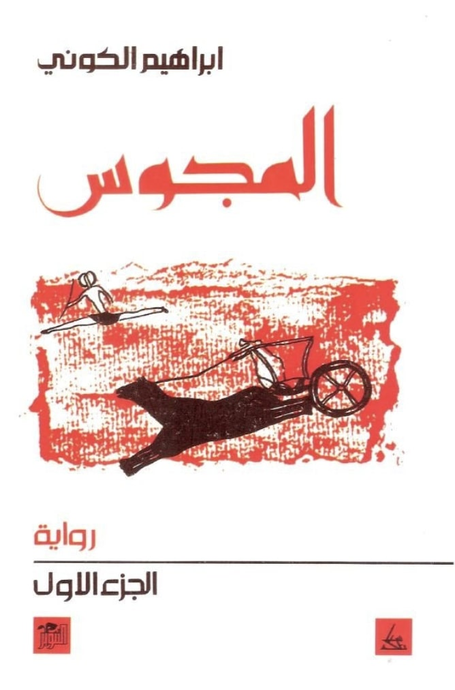
al-Majus or through the Labyrinth
A review of Ibrahim al-Koni epic novel al-Majus as part of #100ArabNovels series
Read More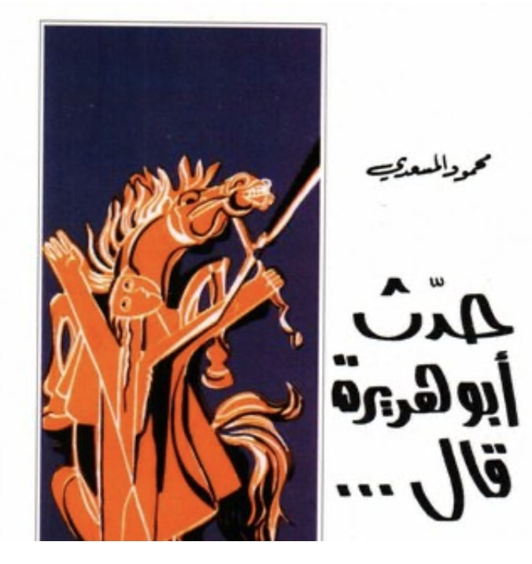
What Messadi's Abu Hurairah Didn't Say
Review of Mahmoud Messadi's Abu Hurairah Said (1973)
Read More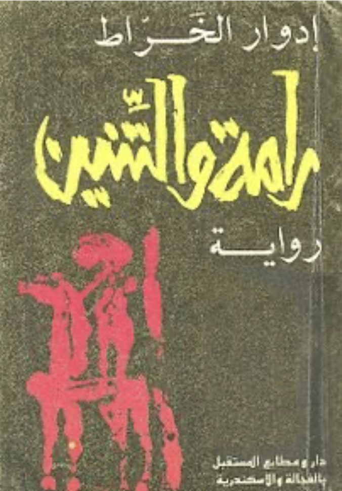
Rama and the Dragon: An Avatar too Short of the Truth
A review of Edwar al-Kharrat's Rama and the Dragon (2002)
Read More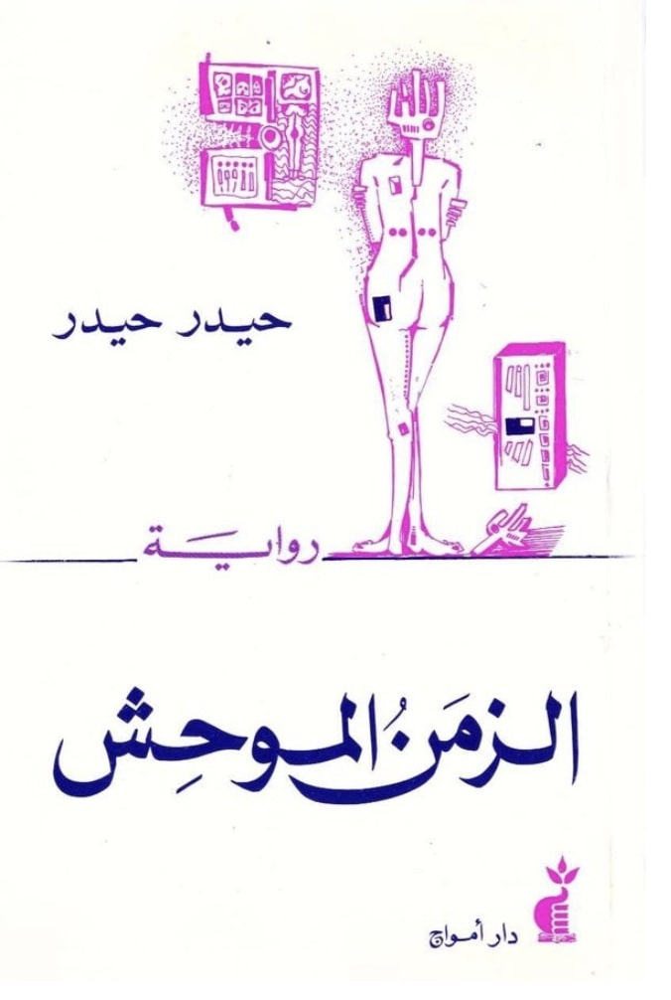
Too Desolate for Words: Reading Haidar Haidar's Desolate Time
A review of Haidar Haidar's Desolate Time (1973)
Read More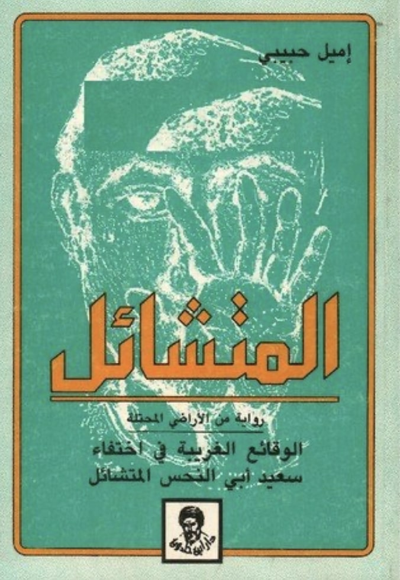
Maqamat with a Spin: Emile Habiby's The Secret Life of Saeed: The Pessoptimist
A review, of Emile Habibi's second novel Al-Waqāʾiʿ al-gharībah fī 'khtifāʾ Saʿīd Abī 'l-Naḥsh al-Mutashāʾil or The Secret Life of Saeed The Pessoptimst (1974)
Read More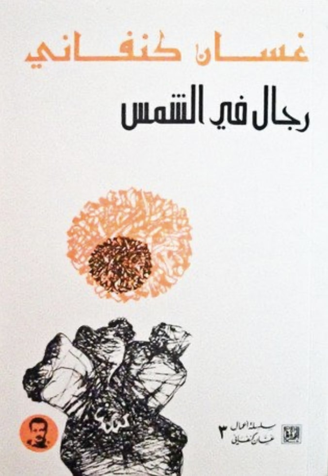
The Searing Sun: Ghassan Kanafani's Men in the Sun
A review of Ghassan Kanafani's Men in the Sun (1960)
Read More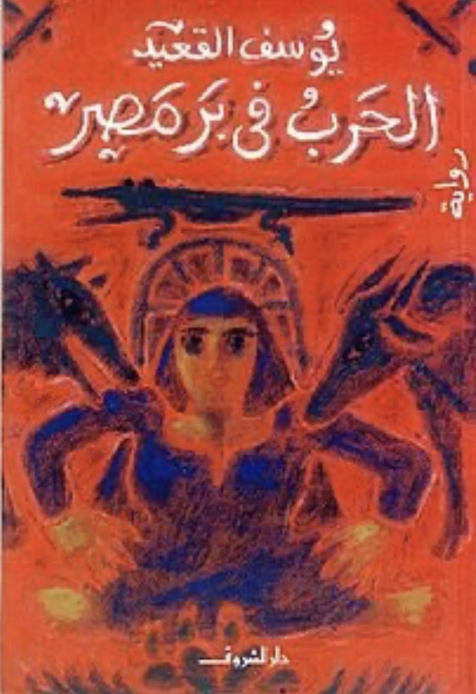
All is not Fair in War: Yusuf al-Qa'id's War in the Land of Egypt
A review of Yusuf al-Qa'id's War in the Land of Egypt (1978)
Read More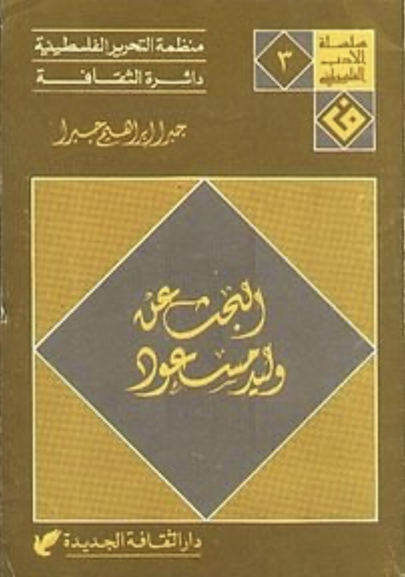
An Autobiography in Disguise: Jabra Ibrahim Jabra's Searching for Walid Masoud
A review of Jabra Ibarhim Jabra's In Search of Walid Massoud
Read More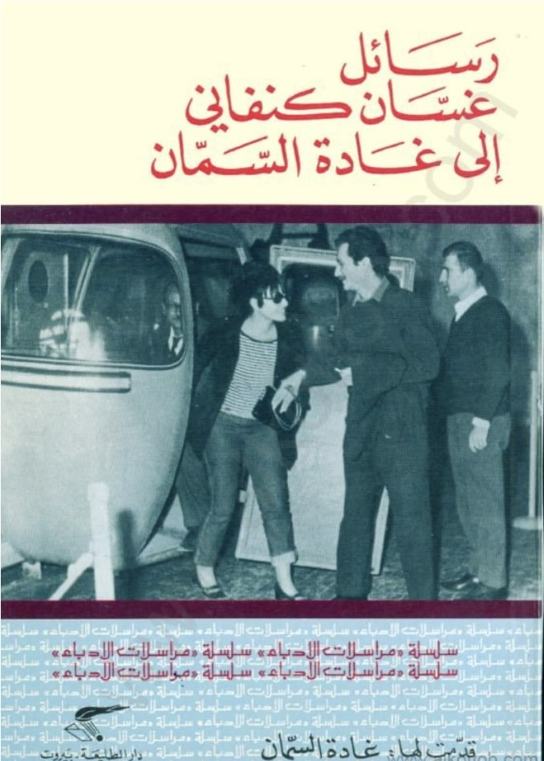
Ghassan Kanafani: To Fayza
This is a translation of one of the letters that Palestinian author and freedom fighter, Ghassan Kanafani (1936-1972), exchanged with Ghada al-Samman.
Read More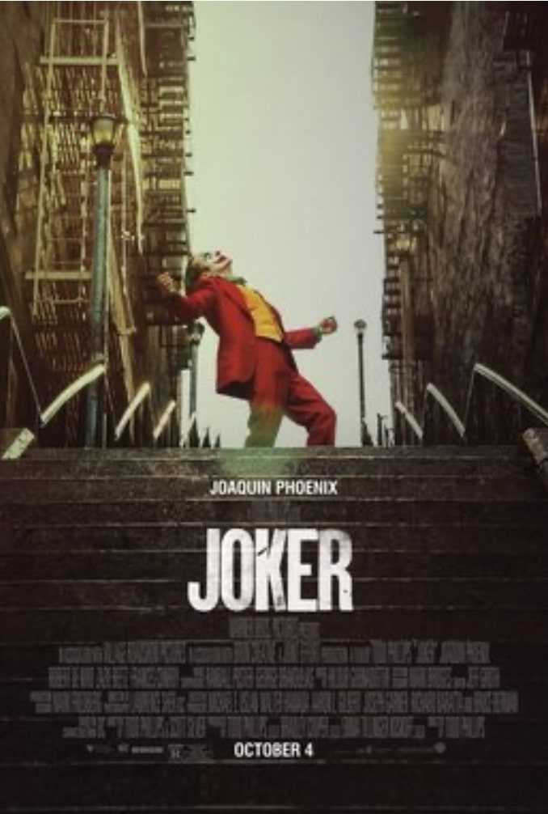
On laughing at the horrors of capitalism
A critical analysis of the Joker film and its relationship to contemporary capitalism.
Read More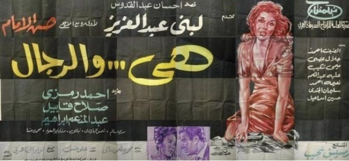
Reflections on Love and Heteronormativity
Reflections on notions of love in the LGBT+ community in Egypt and what it means to frame such relationships in a context inimical to it.
Read More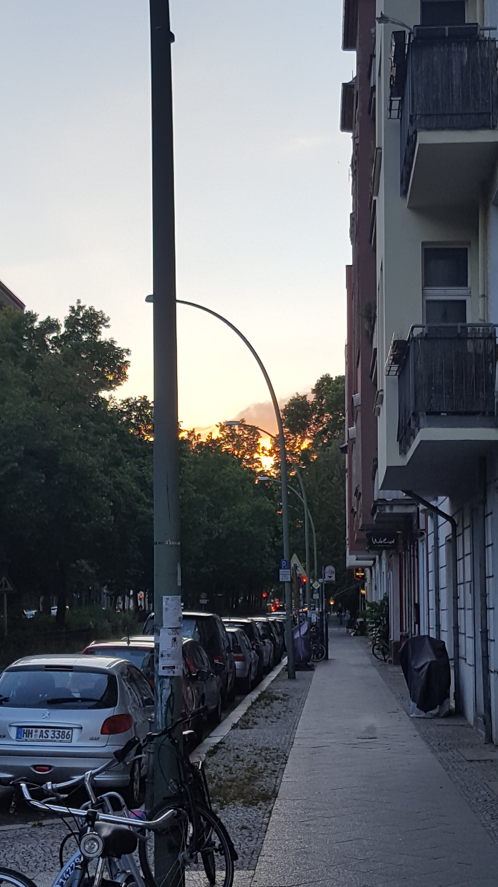